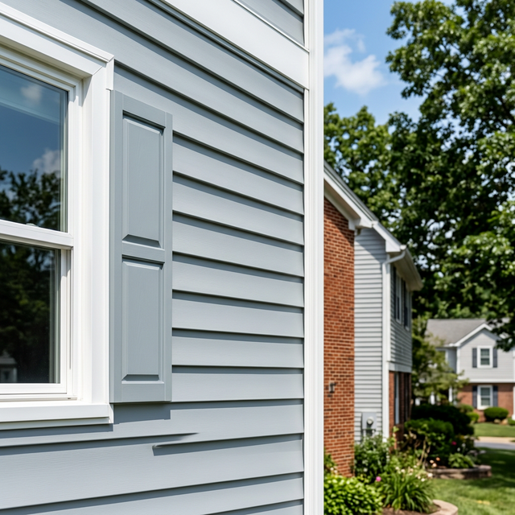

If you're driving through a newer subdivision in Grimsby or Burlington, you'll notice a massive shift in home design. The thin, dented aluminum siding of the 1980s is disappearing, replaced by thick, vibrant, and incredibly durable modern vinyl siding.

The End of the Aluminum Era
Aluminum siding was popular because it was fire-resistant and relatively cheap. However, it had two massive flaws: it dents if a ball hits it, and the paint fades and chalks over time. Once aluminum starts looking bad, your only option is to repaint it, which rarely looks professional.
Why Premium Vinyl is Winning
Modern vinyl siding isn't what it used to be. Today's "premium-gauge" vinyl is thick (up to .046 inches), impact-resistant, and has the color baked all the way through the material. If it gets scratched, the color underneath is the same.
| Feature | Premium Vinyl | Older Aluminum |
|---|---|---|
| Durability | Impact resistant, won't dent | Dents easily (hail, etc) |
| Maintenance | Wash with a hose once a year | Needs repainting after 10-15 yrs |
| Color Quality | Baked-in, UV protected | Surface paint, chalks/fades |
| Insulation | Often paired with foam back | Conductive (hot/cold transfer) |
Energy Efficiency Gains
At Apex Windows & Exteriors, we often install "Insulated Siding." This is vinyl siding that has a contoured foam backing attached to it. It increases your home's R-value and significantly reduces noise from the street, making your home quieter and cheaper to heat.

Curb Appeal Design
Vinyl now comes in dozens of profiles. You can choose Traditional Lap, Dutch Lap, or the very popular Board & Batten vertical siding to give your home a modern farmhouse or contemporary look.
Transform Your Exterior
Ready to give your home a face-lift that lasts a lifetime? Apex Windows & Exteriors provides professional vinyl siding installation with a Price Match Guarantee. See the samples in person at your own home today.
Book My Free Consultation